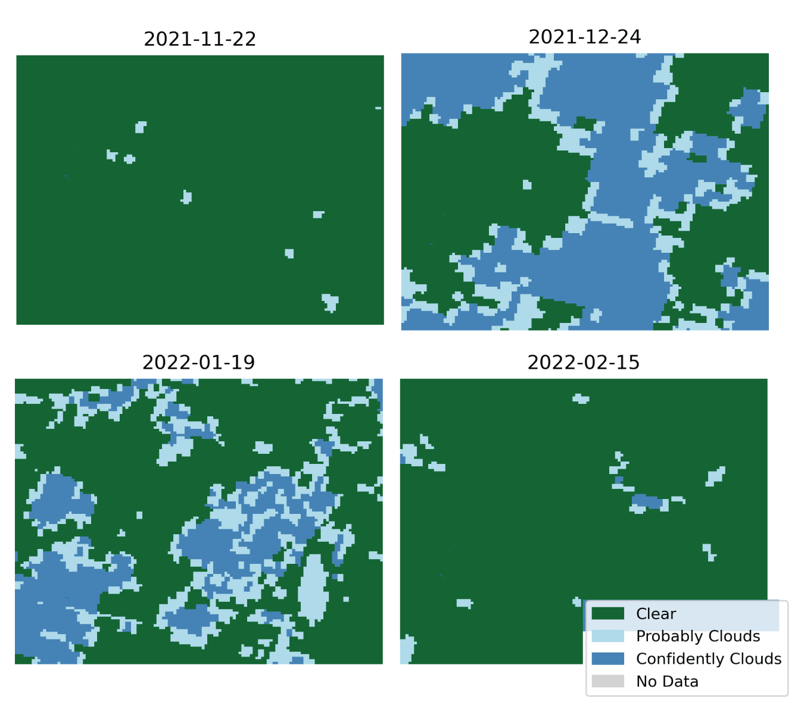

Other Use Cases
Contents
Other Use Cases#
Recovery in Tonga#
On January 15th, 2022, the Hunga-Tonga-Hunga-Ha’apai volcano in Tonga had an extreme eruption, categorized as a once-in-1000-years event. The eruption dispersed clouds of ash and set off several tsunami waves, altogether causing an estimated cost of US$90.4M in damages (GRADE, World Bank 2022). In this analysis, we examine whether scenes from the newly released Light Every Night dataset can be used to assess the disruption on electricity use in buildings and consequent recovery of economic activities.
Few studies have examined the availability of satellite data for the Pacific islands. Some public satellites such as Sentinel-1 do not cover some of the smaller islands in the Pacific (Digital Earth Pacific, 2022). Although VIIRS has a daily revisit rate for most areas in the world, our analysis shows that the coverage is much scarcer for Tonga. Figure 8 shows the availability and quality of the data for the two biggest islands (Tongatapu and ʻEua) from November 2021 through February 2022. Each radiance image has a corresponding data quality image, flagging various issues with the data. The Suomi satellite only overpasses 8 to 10 days per month, but most of the images captured do not contain any valid observations1. Only 7 images are available over the four months considered, and 3 of those are heavily impacted by clouds. This leaves us with 4 images with substantial clear observations (green bars in the graph).

Figure 8: Data quality in Tonga by day, Nov 2021 - Feb 2022
Figure 9 presents maps of data quality (left) and NTL radiance (right) for the 4 days available. The image closest to the largest eruption (January 19th) shows high radiance, possibly from consecutive volcanic activity or residual ash. Lights in February seem comparable to the levels captured in November, prior to the event (the first eruption occurred on December 20th). To get a wider view of the changes we charted the monthly sum of lights by region, or group of islands.
Data Quality |
VIIRS Radiance |
|---|---|
 |
|

Figure 9: Daily maps of data quality (left) and VIIRS radiance (right) for Tonga.
We observe an important decrease in lights in the main island (Tongatapu) in January 2022. However, monthly lights recover quite rapidly to a level comparable to its historical average. One interpretation could be that power was restored by the time the satellite captured NTL data for February. Unfortunately, daily cadence is not available to conduct a detailed assessment of when lights recovered. Future analysis could examine pixel-level changes with detailed settlement maps.

Figure 10: Monthly sum of lights for regions in Tonga
This assessment highlights a key trade-off in pursuing a higher temporal resolution for analysis. Although daily images can provide temporal precision to investigate specific events, the images are typically much noisier, can be affected by clouds, and may not be available in remote areas. Monthly composites are stable, though they may only be based on a few cloud-free observations. Annual composites are generated with a more a more intense cleaning and noise-removal procedure, making them more optimal for economic analysis, but cannot be used to assess the short-term impact of a shock.
Electrification#
This section introduces electrification statistics derived from the High-Resolution Electricity Access project (Brian Min, Zachary O’Keeffee)[http://www-personal.umich.edu/~brianmin/HREA/methods.html]. The model developed also relies on the Light Every Night dataset, in combination with High-Resolution Settlement Maps, to generate electrification statistics at a high spatial resolution. The methodology is described in depth in the project website and can be summarized with the following steps:
Match daily NTL scenes with high resolution settlement maps.
Remove observations with poor data quality and outliers.
Sample lights from uninhabited locations to measure background noise.
Estimate if a settlement is brighter than background noise through a linear mixed effects model.
The output of this model are pixel-level probabilities that each settlement was electrified on a given year. We downloaded these outputs and summarized them to calculate ward-level electrification rates. We define electricity rates as the share of settlement with a lit probability score higher or equal than 0.5. The maps in Figure 11 show summarized results for the Solomon Islands and Vanuatu. Most wards are classified with low electrification rates (0 to 20), except for the main cities and more populated areas.


Figure 11. Electrification Rates
The spatial disaggregation provided by this method is likely invaluable for targeting development operations in island states. Yet more efforts are needed to validate these statistics with household surveys. Summarizing these outputs to the national level results in rates much lower than what is reported in the World Development Indicators (30% in Solomon Islands and 36% in Vanuatu). In Papua New Guinea, electrification rates derived from the HREA dataset are generally higher than those observed in the latest electrification survey, but correlation is still high (r=0.84).
- 1
We do not know the exact cause for this. The description of the quality flag is as follows: “This bit is set to 1 if no data is available for that scanline/section of orbit, or the grid cell is outside the bounds of the swath.”